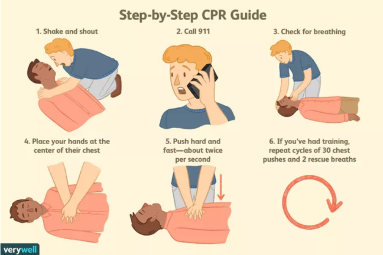

CPR (心肺复苏术) for Unresponsive Individuals
If a person falls unresponsive due their heart stopping, initiating CPR can be the difference between life and death. Start CPR or see if anyone around you is trained in CPR. If not, the 911 operator can assist.
CPR Steps
- Make sure that there is nothing in the area that could be potentially dangerous. You won't be able to effectively help someone else if you yourself aren't safe!
- Take a deep breath. Stay calm.
- Check the person's level of consciousness. Loudly ask “Are you OK?” and firmly tap them on their shoulders.
- If the person is unresponsive, call 911 immediately. Dispatchers may stay on the phone with you until help arrives.
- Determine whether the person is breathing.
- If the person is not breathing, start hands-only CPR. (That means just chest compressions, and no mouth-to-mouth.)
Here's how to perform high-quality chest compressions:
- Kneel at the person's side. Place your dominant hand on the center of the person's chest, and your non-dominant hand over your dominant hand. Lace your fingers together.
- Position yourself over the person's body so that your shoulders are over your hands, and straighten your arms.
- Push hard and fast in the center of the chest using the heel of your dominant hand. Deliver compressions at a rate of 100-120 beats per minute.
- Compress the chest to a depth of 2 to 2.4 inches (5-6 cm). That's about 1/3 of the chest diameter.
- Take your weight off the chest in between compressions. It is important to allow the chest to fully recoil so that oxygenated blood can be delivered to the heart.
- Don't stop CPR unless the person starts breathing, you become too tired to continue, or emergency health care providers are present and prepared to take over.
